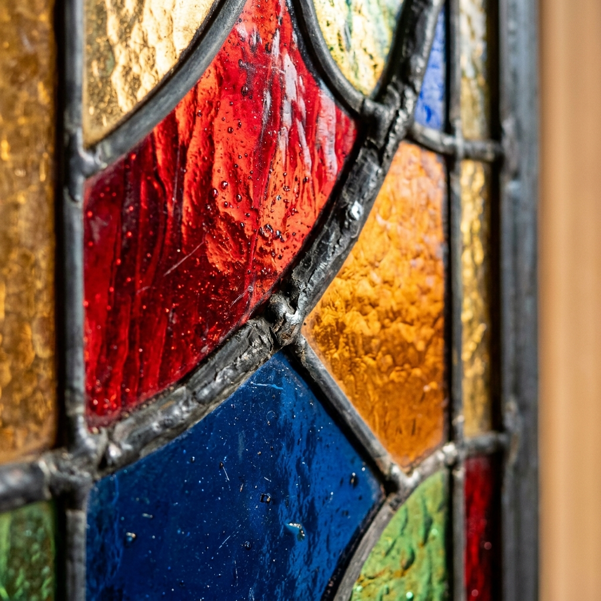
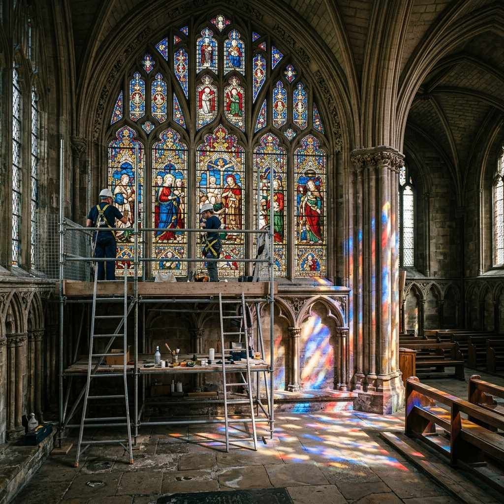
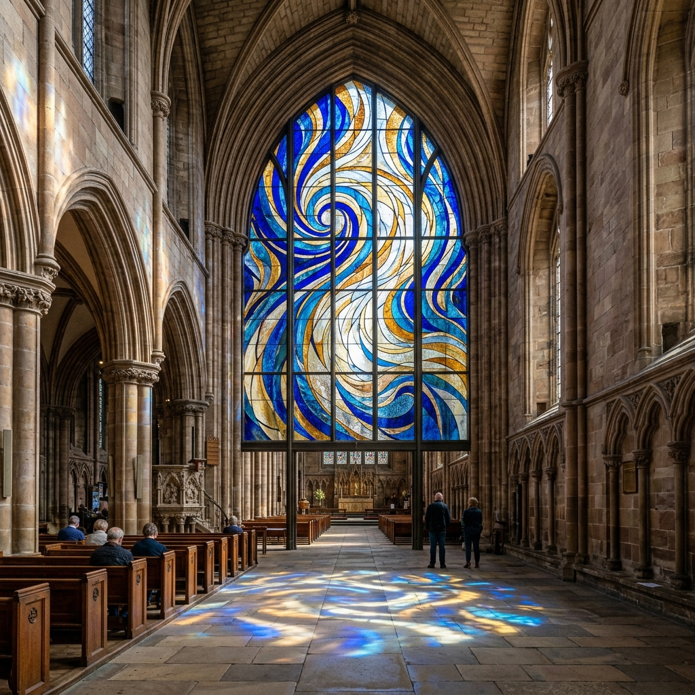

Our Portfolio
LUMINOUS GALLERY
Browse our collection of restored antiques, modern custom commissions, and masterfully crafted panels showcasing the brilliant interplay of light and glass.

The Geometric Dawn

1920s Botanical Transom

Amber Hexagon
Deco Symmetry

Victorian Rose Panel

Ocean Textures
The Magic of Restoration
Witness the transformation. We breathe new life into severely damaged, bowing, and soot-covered historic panels, restoring them to their original glory.

Bowed lead came, missing pieces, and decades of grime.
Completely re-leaded, chemically cleaned, and color-matched glass.
It's All In The Details
True craftsmanship is visible up close. Notice the perfectly rounded solder beads, the flawless intersection of copper foil lines, and the careful selection of glass textures that give a piece depth even when unlit.
We pride ourselves on the structural integrity and aesthetic perfection of every joint we solder.

Project Spotlight
Cathedral of St. Jude

A Monumental Re-Leading
Our team spent six months carefully removing, cleaning, and re-leading this massive 20-foot rose window. Over 4,000 individual pieces of glass were assessed, with less than 5% requiring modern replacements.
Bring The Light Home
Loved what you saw in the gallery? You don't need a cathedral window to enjoy stained glass. Browse our shop for handmade suncatchers and small panels ready to hang in your home.